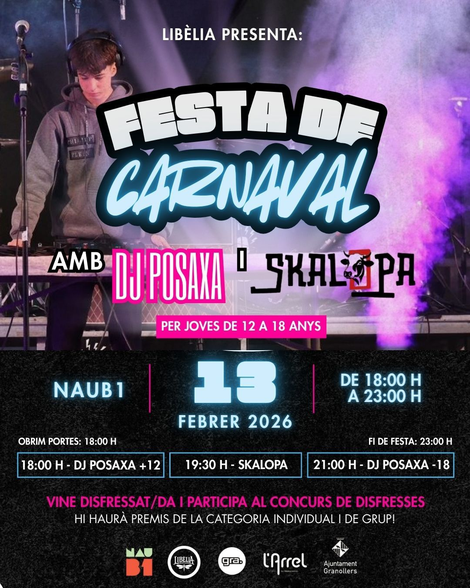

Esdeveniments
Consulta aquí fotos i records dels esdeveniments de DJ Posaxa.
DJ Posaxa és un jove DJ de Granollers que combina energia, creativitat i connexió amb el públic en cada sessió. Des de la seva primera actuació a la Festa de Nadal de l'Escola Pia de Granollers (2024), ha fet vibrar escenaris com el barri Montserrat de la Garriga, el Gra Jove durant el MusiKnviu 2025, la Festa Blanca de Granollers i la Disco Inferno XS de la Festa Major de Granollers 2025.
2026
🎊 CARNAVAL 2026: CONCERT AMB SKALOPA 🎊
Prepara la teva millor disfressa i vine a gaudir de la millor música en directe a la NAUB1! No et perdis la nit més boja de l'any a Granollers organitzada per Libèlia.

📅 DETALLS DE L'ESDEVENIMENT (13 DE FEBRER)
- Artistes convidats: Sessió amb DJ POSAXA i concert en directe del grup Skalopa.
- Horaris de la festa:
- 18:00h: Obertura de portes i inici amb DJ POSAXA (+12).
- 19:30h: Concert de SKALOPA.
- 21:00h: Sessió de DJ POSAXA (-18).
- 23:00h: Finalització de l'esdeveniment.
- Públic: Festa adreçada a joves de 12 a 18 anys.
- Ubicació: NAUB1 (Granollers).
🎟️ ENTRADES I RESERVES
- Preu: L'entrada és totalment gratuïta.
- Reserves: Les entrades estaran disponibles a partir del 17 de gener a les 18:00h.
- Aforament: Les places són molt limitades per seguretat; reserva la teva abans que s'exhaureixin.
🎭 CONCURS DE DISFRESSES
Vine disfressat/da i participa! Hi haurà premis per a les categories individual i de grup.
📍 Ubicació
⏳ Compte enrere per l'esdeveniment
Per més informació:
@dj.posaxaMitja Marató de Granollers – Colla dels Blancs
18 de gener de 2026, de 10:30h a 13:00h
DJ Posaxa posarà el ritme a la Mitja Marató. Una matinal plena d'energia per acompanyar els corredors i el públic de la mà de la Colla dels Blancs. Ubicació: Plaça Maluquer i Salvador.
Compte enrere
Ubicació

2025
Disco Inferno XS – Festa Major de Granollers
27 d'agost de 2025
El gran moment de l'any. Un esdeveniment per a públic adolescent amb escenografia pròpia, efectes de llum, intro audiovisual i un concepte totalment personalitzat per DJ Posaxa. Amb un ambient inspirat en els pirates i moments èpics com el show de bengales amb "Sky Full of Stars", la sessió va ser un èxit total i un dels punts àlgids de la Festa Major.
Festa Blanca – Granollers
8 de juny de 2025
Sessió a la plaça de l'Església, amb un públic variat i un estil més estètic i cuidat. Va destacar per la seva selecció musical i una transició constant d'energies, combinant temes populars amb ritmes més electrònics.
Gra Jove – MusiKnviu 2025
24 de maig de 2025
Tot i no poder participar al concurs per ser menor d'edat, va oferir una actuació fora de concurs mentre el jurat deliberava. Va sorprendre amb una sessió dinàmica i professional, rebent molt bones crítiques del públic i dels organitzadors.
Barri Montserrat – La Garriga
25 d'abril de 2025
Sessió oberta i gratuïta amb música d'ambient i pachangueo. Va ser un dels punts d'inflexió de la seva trajectòria: Posaxa va aconseguir una connexió brutal amb el públic i va convertir la plaça en una festa. El segon dia previst (27 d'abril) es va anul·lar per la pluja.
2024
Festa de Nadal – Escola Pia Granollers
20 de desembre de 2024
Va ser la seva primera actuació en públic, davant de companys i famílies de l'escola. Una sessió festiva i variada que va marcar el començament del projecte DJ Posaxa, amb una gran resposta del públic i les primeres proves d'il·luminació i animació pròpia.
Identitat artística
DJ Posaxa aposta per shows d'alt impacte visual i emocional...